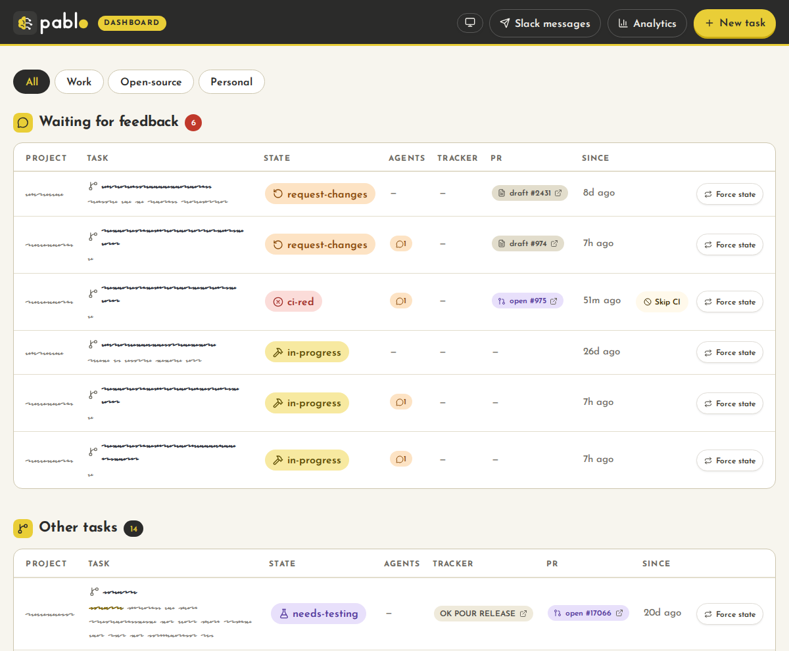

task-analyst
in-progressReads the ticket, its parents, linked PRs and the relevant code, then hands you a summary and an action plan. Runs once per task.
Personal Assistant for Boring Logic & Operations
PABLO watches every pull request, every CI run, every review, and starts the right AI agent in the right worktree when something needs doing. You stop being the human router of your own tasks.
| branch | state | PR | agents |
|---|
The problem
Five or six open PRs across two or three projects. Every morning, the same round:
None of it is hard. That's the problem: each item is a context switch, and I'd spent a year getting rid of those.
One question, on a loop
Given the state of this pull request, is there something an agent should do, and if so, which one?
If there is, PABLO launches it through your agent environment, in the right worktree, exactly the way you would have.
How it works
One task = one branch, one worktree, one state. A background poller checks every PR every few minutes and moves it through a plain state machine. Click a state to see what happens when a task enters it.
pablo task:start, /pablo-commit-and-pr)
detected by the poller
work comes back to you, with an agent's analysis
A merge closes the task from any state: PABLO deletes its state and removes the worktree. There's no todo state on purpose: a ticket nobody has started has no task yet.
ci-analyst starting in the right worktreeAgents
The intelligence lives in a handful of markdown agents. The rest is plumbing that decides when to turn the tap on. Each launch has the same shape: a link (ticket or PR), the right worktree, the agent picked by the state. You don't write prompts any more, you read results.
in-progressReads the ticket, its parents, linked PRs and the relevant code, then hands you a summary and an action plan. Runs once per task.
ci-redFetches the failing checks and their logs, ties each failure to the code that caused it, and proposes a fix plan.
request-changesTurns review comments into a fix plan. The PR goes back to draft on GitHub.
testing-failedChecks QA feedback against the PR one point at a time, and drafts a reply for the ticket.
sync conflictThe one deliberate exception. When the 12-hour rebase hits a conflict, git aborts cleanly and this agent replays the rebase. It can rewrite your branch, but it can't act as you: no merge, no review, no comment.
The first four are read-only. They analyse and never touch your code. A fast, cheap, low-temperature model is enough for them.
“The dangerous permission was never edit. It was acting as me in front of other people.”
Principles
Analysis agents can't edit files, can't run anything but read-only git, and can never push. That's enforced in their permissions, not just asked for in the prompt. Even if a ticket says “just fix it quickly”, they can't.
# task-analyst.md (frontmatter)
permissions:
- { action: edit, resource: "*", effect: deny }
- { action: shell, resource: "*", effect: deny }
- { action: shell, resource: "git *", effect: allow }
- { action: shell, resource: "git push *", effect: deny }The only way into draft is a command you type: /pablo-commit-and-pr writes the commit and the PR description, then hands the task back to PABLO. Everything after that is the poller's job.
Polling, transitions, review triage, “is CI green?”, worktree sync: all of it is deterministic PHP. An LLM only runs when there's something to read, understand or decide.
PABLO talks to the CLIs you've already logged into: gh, acli, linear, opencode, claude or copilot. pablo system:doctor tells you what's missing before a cron job fails at 3 am.
It never uses --force, only --force-with-lease, so your own push always wins. Dirty branches are never rebased. The primary checkout is only reset when it's clean and has no local commits.
Jira, GitHub Issues and Linear are only ever read. PABLO changes git branches and PR metadata (draft or ready), never your tickets.
Dashboard
$ pablo web # → http://127.0.0.1:8321
Fits your setup
GitHub IssuesJiraLinearConfluence
GitHub PRsGitHub ActionsCircleCIany check
OpenCodeClaude CodeCopilot CLIOrcaOpenChamberheadless
systemd (Linux)launchd (macOS)
Get started
Detects your agent runtime and environment, puts pablo on your PATH, links the agents and starts the scheduler and the dashboard.
$ curl -fsSL https://getpablo.dev/installer | bashThe doctor checks every CLI and its auth. The wizard adds your first project.
$ pablo system:doctor
$ pablo project:newFrom an issue link or a plain prompt. The task-analyst starts right away.
$ pablo task:start <issue-url>
> /pablo-commit-and-pr # in OpenCode, Claude Code or CopilotYou'll need: git, OpenCode, Claude Code or GitHub Copilot CLI, and an agent environment (Orca or OpenChamber), plus PHP 8.4 to run PABLO. Then the command-line tool of each service your projects use: gh for GitHub, acli for Jira, linear for Linear. Quickstart guide →
Articles
Your agents already do the analysis. PABLO handles the noticing and the waiting.
Get started